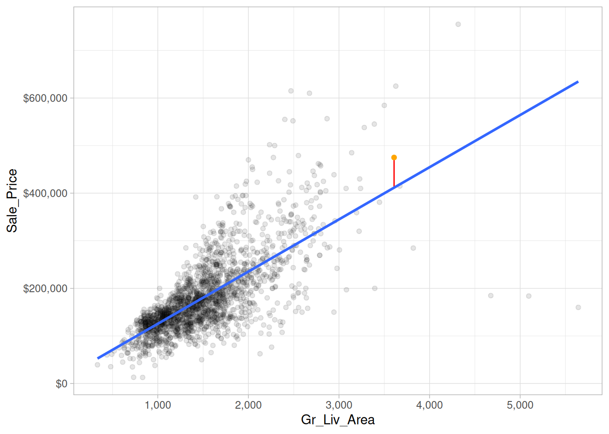
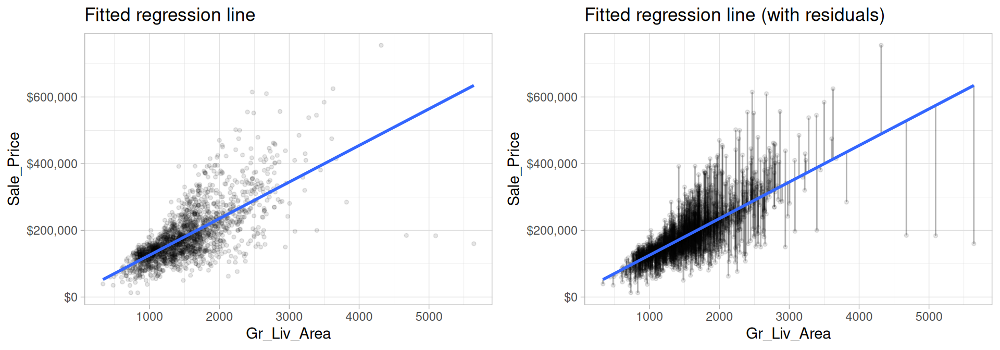

# Data wrangling & visualization packages
library(tidyverse)
# Modeling packages
library(tidymodels)3 Linear regression
Linear regression, a staple of classical statistical modeling, is one of the simplest algorithms for doing supervised learning. Though it may seem somewhat dull compared to some of the more modern statistical learning approaches described in later chapters, linear regression is still a useful and widely applied statistical learning method. Moreover, it serves as a good starting point for more advanced approaches; as we will see in later chapters, many of the more sophisticated statistical learning approaches can be seen as generalizations to or extensions of ordinary linear regression. Consequently, it is important to have a good understanding of linear regression before studying more complex learning methods.
This chapter introduces linear regression with an emphasis on prediction, rather than inference.
- Modeling for inference: When you want to explicitly describe and quantify the relationship between the outcome variable \(Y\) and a set of explanatory variables \(X\), determine the significance of any relationships, have measures summarizing these relationships, and possibly identify any causal relationships between the variables.
- Modeling for prediction: When you want to predict an outcome variable \(Y\) based on the information contained in a set of predictor variables \(X\). Unlike modeling for explanation, however, you don’t care so much about understanding how all the variables relate and interact with one another, but rather only whether you can make good predictions about \(Y\) using the information in \(X\).
An excellent and comprehensive overview of linear regression is provided in Kutner et al. (2005). See Faraway (2016) for a discussion of linear regression in R and Lipovetsky (2020) for a great introduction to linear regression for inference and explanation rather than prediction.
3.1 Prerequisites
This chapter leverages the following packages:
We’ll also continue working with the Ames housing data:
# stratified sampling with the rsample package
ames <- AmesHousing::make_ames()
set.seed(123)
split <- initial_split(ames, prop = 0.7, strata = "Sale_Price")
ames_train <- training(split)
ames_test <- testing(split)3.2 Correlation
Correlation is a single-number statistic that measures the extent that two variables are related (“co-related”) to one another. For example, say we want to understand the relationship between the total above ground living space of a home (Gr_Liv_Area) and the home’s sale price (Sale_Price).
Looking at the following scatter plot we can see that some relationship does exist. It appears that as Gr_Liv_Area increases the Sale_Price of a home increases as well.
ggplot(ames_train, aes(Gr_Liv_Area, Sale_Price)) +
geom_point(size = 1.5, alpha = .25)Correlation allows us to quantify this relationship. We can compute the correlation with the following:
ames_train %>%
summarize(correlation = cor(Gr_Liv_Area, Sale_Price))
## # A tibble: 1 × 1
## correlation
## <dbl>
## 1 0.708The value of a correlation coefficient will always vary between +1 and -1. In our example, the correlation coefficient is 0.71. When the value of the correlation coefficient is +1 or -1, then it is said to be a perfect degree of association between the two variables (near +1 implies a strong positive association and near -1 implies a strong negative association). This simply means that when there is a one unit change in one variable we will always see a certain change change in units in the other variable. As the correlation coefficient nears 0, the relationship between the two variables weakens with a near 0 value implying no association between the two variables (a one unit change in one variable has no relationship to any level of change in the other variable).
So, in our case we could say we have a moderate positive correlation between Gr_Liv_Area and Sale_Price. Let’s look at another relationship. In the following we look at the relationship between the unfinished basement square footage of homes (Bsmt_Unf_SF) and the Sale_Price.
ggplot(ames_train, aes(Bsmt_Unf_SF, Sale_Price)) +
geom_point(size = 1.5, alpha = .25)In this example, we don’t see much of a relationship. Basically, as Bsmt_Unf_SF gets larger or smaller, we really don’t see a strong pattern with Sale_Price.
If we look at the correlation for this relationship, we see that the correlation coefficient is much closer to zero than to 1. This confirms our visual assessment that there does not seem to be much of a relationship between these two variables.
ames_train %>%
summarize(correlation = cor(Bsmt_Unf_SF, Sale_Price))
## # A tibble: 1 × 1
## correlation
## <dbl>
## 1 0.186Although a useful measure, correlation can be hard to imagine exactly what the association is between two variables based on this single statistic. Moreover, its important to realize that correlation typically assumes a linear relationship between two variables.
For example, let’s check out the anscombe data, which is a built-in data set provided in R. If we look at each x and y relationship visually, we can see significant differences:
p1 <- qplot(x = x1, y = y1, data = anscombe)
p2 <- qplot(x = x2, y = y2, data = anscombe)
p3 <- qplot(x = x3, y = y3, data = anscombe)
p4 <- qplot(x = x4, y = y4, data = anscombe)
gridExtra::grid.arrange(p1, p2, p3, p4, ncol = 2)However, if we compute the correlation between each of these relationships we see that they all have nearly equal correlation coefficients!
Never take a correlation coefficient at face value! You should always compare the visual relationship with the computed correlation value.
anscombe %>%
summarize(
corr_x1_y1 = cor(x1, y1),
corr_x2_y2 = cor(x2, y2),
corr_x3_y3 = cor(x3, y3),
corr_x4_y4 = cor(x4, y4)
)
## corr_x1_y1 corr_x2_y2 corr_x3_y3 corr_x4_y4
## 1 0.8164205 0.8162365 0.8162867 0.8165214There are actually several different ways to measure correlation. The most common, and the one we’ve been using here, is Pearson’s correlation, represented by \(r_{xy}\). Given paired data \(\left\{(x_{1},y_{1}),\ldots ,(x_{n},y_{n})\right\}\) consisting of \(n\) pairs, \(r_{xy}\) is defined as
\[ r_{XY}={\frac {\sum_{i=1}^{n}(X_i-{\bar {X}})(Y_i-{\bar {Y}})}{{\sqrt {\sum_{i=1}^{n}(X_i-{\bar {X}})^{2}}}{\sqrt {\sum_{i=1}^{n}(Y_i-{\bar {Y}})^{2}}}}} \]
where \(X_i\) and \(Y_i\) represent the individual sample points and \(\bar{X}\) and \(\bar{Y}\) are the sample mean. There are alternative methods that allow us to loosen some assumptions such as assuming a linear relationship; however, in the next section we’ll see how simple linear regression fully characterizes this Pearson’s correlation.
3.2.1 Knowledge check
3.3 Simple linear regression
As discussed in the last section, correlation is often used to quantify the strength of the linear association between two continuous variables. However, this statistic alone does not provide us with a lot of actionable insights. But we can build on the concept of correlation to provide us with more useful information.
In this section, we seek to fully characterize the linear relationship we measured with correlation using a method called simple linear regression (SLR).
3.3.1 Best fit line
Let’s go back to our plot illustrating the relationship between Gr_Liv_Area and Sale_Price. We can characterize this relationship with a linear line that we consider is the “best-fitting” line (we’ll define “best-fitting” in a little bit). We do this by adding overplotting with geom_smooth(method = "lm", se = FALSE)
ggplot(ames_train, aes(Gr_Liv_Area, Sale_Price)) +
geom_point(size = 1.5, alpha = .25) +
geom_smooth(method = "lm", se = FALSE)The line in the above plot is called a “regression line.” The regression line is a visual summary of the linear relationship between two numerical variables, in our case the outcome variable Sale_Price and the explanatory variable Gr_Liv_Area. The positive slope of the blue line is consistent with our earlier observed correlation coefficient of 0.71 suggesting that there is a positive relationship between these two variables.
Mathematically, we can express this regression line as
\[ Y_i = \beta_0 + \beta_1 X_i + \epsilon_i, \quad \text{for } i = 1, 2, \dots, n, \tag{3.1}\]
where \(Y_i\) represents the i-th response value, \(X_i\) represents the i-th feature value, \(\beta_0\) and \(\beta_1\) are fixed, but unknown constants (commonly referred to as coefficients or parameters) that represent the intercept and slope of the regression line, respectively, and \(\epsilon_i\) represents noise or random error. In this chapter, we’ll assume that the errors are normally distributed with mean zero and constant variance \(\sigma^2\), denoted \(\stackrel{iid}{\sim} \left(0, \sigma^2\right)\). Since the random errors are centered around zero (i.e., \(E\left(\epsilon\right) = 0\)), linear regression is really a problem of estimating a conditional mean:
\[ E\left(Y_i | X_i\right) = \beta_0 + \beta_1 X_i. \]
For brevity, we often drop the conditional piece and write \(E\left(Y | X\right) = E\left(Y\right)\). Consequently, the interpretation of the coefficients is in terms of the average, or mean response. For example, the intercept \(\beta_0\) represents the average response value when \(X = 0\) (it is often not meaningful or of interest and is sometimes referred to as a bias term). The slope \(\beta_1\) represents the increase in the average response per one-unit increase in \(X\) (i.e., it is a rate of change).
So what are the coefficients of our best fit line that characterizes the relationship between Gr_Liv_Area and Sale_Price? We can get that by fitting an SLR model where Sale_Price is our response variable and Gr_Liv_Area is our single predictor variable.
Once our model is fit we can extract our fitted model results with tidy():
model1 <- linear_reg() %>%
fit(Sale_Price ~ Gr_Liv_Area, data = ames_train)
tidy(model1)
## # A tibble: 2 × 5
## term estimate std.error statistic p.value
## <chr> <dbl> <dbl> <dbl> <dbl>
## 1 (Intercept) 15938. 3852. 4.14 3.65e- 5
## 2 Gr_Liv_Area 110. 2.42 45.3 5.17e-311The estimated coefficients from our model are \(b_0 =\) 15938.17 and \(b_1 =\) 109.67. To interpret, we estimate that the mean selling price increases by 109.67 for each additional one square foot of above ground living space.
With these coefficients, we can look at our scatter plot again (this time with the x & y axes formatted) and compare the characterization of our regression line with the coefficients. This simple description of the relationship between the sale price and square footage using a single number (i.e., the slope) is what makes linear regression such an intuitive and popular modeling tool.
ggplot(ames_train, aes(Gr_Liv_Area, Sale_Price)) +
geom_point(size = 1.5, alpha = .25) +
geom_smooth(method = "lm", se = FALSE) +
scale_x_continuous(labels = scales::comma) +
scale_y_continuous(labels = scales::dollar)3.3.2 Estimation
This is great but you may still be asking how we are estimating the coefficients? Ideally, we want estimates of \(b_0\) and \(b_1\) that give us the “best fitting” line represented in the previous plot. But what is meant by “best fitting”? The most common approach is to use the method of least squares (LS) estimation; this form of linear regression is often referred to as ordinary least squares (OLS) regression. There are multiple ways to measure “best fitting”, but the LS criterion finds the “best fitting” line by minimizing the residual sum of squares (RSS).
Before we mathematically define RSS, let’s first define what a residual is. Let’s look at a single home. This home has 3,608 square feet of living space and sold for $475,000. In other words, \(x = 3608\) and \(y = 475000\).
## # A tibble: 1 × 2
## Gr_Liv_Area Sale_Price
## <int> <int>
## 1 3608 475000Based on our linear regression model (or the intercept and slope we identified from our model) our best fit line estimates that this house’s sale price is
\[\widehat{Y_i} = b_0 + b_1 \times X_i = 15938.1733 + 109.6675 \times 3608 = 411618.5\]
We can visualize this in our plot where we have the actual Sale_Price (orange) and the estimated Sale_Price based on our fitted line. The difference between these two values (\(Y_i - \widehat{Y_i} = 475000 - 411618.5 = 63381.5\)) is what we call our residual. It is considered the error for this observation, which we can visualize with the red line.

Now, if we look across all our data points you will see that each one has a residual associated with it. In the right plot, the vertical lines represent the individual residuals/errors associated with each observation.

The OLS criterion identifies the “best fitting” line that minimizes the sum of squares of these residuals. Mathematically, this is computed by taking the sum of the squared residuals (or as stated before the residual sum of squares –> “RSS”).
\[ RSS = \sum_{i=1}^n\left(Y_i - \widehat{Y_i}\right)^2 \]
where \(Y_i\) and \(\widehat{Y_i}\) just mean the actual and predicted response values for the ith observation.
One drawback of the LS procedure in linear regression is that it only provides estimates of the coefficients; it does not provide an estimate of the error variance \(\sigma^2\)! LS also makes no assumptions about the random errors. These assumptions are important for inference and in estimating the error variance which we’re assuming is a constant value \(\sigma^2\). One way to estimate \(\sigma^2\) (which is required for characterizing the variability of our fitted model), is to use the method of maximum likelihood (ML) estimation (see Kutner et al. (2005) Section 1.7 for details). The ML procedure requires that we assume a particular distribution for the random errors. Most often, we assume the errors to be normally distributed. In practice, under the usual assumptions stated above, an unbiased estimate of the error variance is given as the sum of the squared residuals divided by \(n - p\) (where \(p\) is the number of regression coefficients or parameters in the model):
\[\begin{equation} \widehat{\sigma}^2 = \frac{1}{n - p}\sum_{i = 1} ^ n r_i ^ 2, \end{equation}\]
where \(r_i = \left(Y_i - \widehat{Y}_i\right)\) is referred to as the \(i\)th residual (i.e., the difference between the \(i\)th observed and predicted response value). The quantity \(\widehat{\sigma}^2\) is also referred to as the mean square error (MSE) and its square root is denoted RMSE (see Section Section 2.5.1 for discussion on these metrics).
For our SLR model, we can extract the RMSE metric and others using the glance() function:
glance(model1) %>%
select(sigma) %>%
mutate(RMSE = sigma, MSE = RMSE^2)
## # A tibble: 1 × 3
## sigma RMSE MSE
## <dbl> <dbl> <dbl>
## 1 56788. 56788. 3224869786.Typically, these error metrics are computed on a separate validation set discussed in Section Section 2.5 or using cross-validation as will be discussed in a future chapter; however, they can also be computed on the same training data the model was trained on as illustrated here.
3.3.3 Inference
Let’s go back to our model1 results that show the \(b_0\) and \(b_1\) coefficient values:
tidy(model1)
## # A tibble: 2 × 5
## term estimate std.error statistic p.value
## <chr> <dbl> <dbl> <dbl> <dbl>
## 1 (Intercept) 15938. 3852. 4.14 3.65e- 5
## 2 Gr_Liv_Area 110. 2.42 45.3 5.17e-311Note that we call these coefficient values “estimates.” Due to various reasons we should always assume that there is some variability in our estimated coefficient values. The variability of an estimate is often measured by its standard error (SE)—the square root of its variance. Since we assume that the errors in the linear regression model are \(\stackrel{iid}{\sim} \left(0, \sigma^2\right)\), then simple expressions for the SEs of the estimated coefficients exist and were computed for us and displayed in the column labeled std.error in the output from tidy().
From this, we can also derive simple \(t\)-tests to understand if the individual coefficients are statistically significant from zero. The t-statistics for such a test are nothing more than the estimated coefficients divided by their corresponding estimated standard errors (i.e., in the output from tidy(), t value (aka statistic) = estimate / std.error). The reported t-statistics measure the number of standard deviations each coefficient is away from 0. Thus, large t-statistics (greater than two in absolute value, say) roughly indicate statistical significance at the \(\alpha = 0.05\) level. The p-values for these tests are also reported by tidy() in the column labeled p.value.
This may seem quite complicated but don’t worry, R will do the heavy lifting for us. Just realize we can use these additional statistics provided in our model summary to tell us if the predictor variable (Gr_Liv_Area in our example) has a statistically significant relationship with our response variable.
When the p.value for a given coefficient is quite small (i.e. p.value < 0.005), that is a good indication that the estimate for that coefficient is statistically different than zero. For example, the p.value for the Gr_Liv_Area coefficient is 5.17e-311 (basically zero). This means that the estimated coefficient value of 109.6675 is statistically different than zero.
Let’s look at this from another perspective. Under the same assumptions, we can also derive confidence intervals for the coefficients. The formula for the traditional \(100\left(1 - \alpha\right)\)% confidence interval for \(\beta_j\) is
\[ \widehat{\beta}_j \pm t_{1 - \alpha / 2, n - p} \widehat{SE}\left(\widehat{\beta}_j\right). \tag{3.2}\]
In R, we can construct such (one-at-a-time) confidence intervals for each coefficient using confint(). For example, a 95% confidence intervals for the coefficients in our SLR example can be computed using
confint(model1$fit, level = 0.95)
## 2.5 % 97.5 %
## (Intercept) 8384.213 23492.1336
## Gr_Liv_Area 104.920 114.4149To interpret, we estimate with 95% confidence that the mean selling price increases between 104.92 and 114.41 for each additional one square foot of above ground living space. We can also conclude that the slope \(b_1\) is significantly different from zero (or any other pre-specified value not included in the interval) at the \(\alpha = 0.05\) level (\(\alpha = 0.05\) because we just take 1 - confidence level we are computing so \(1 - 0.95 = 0.05\)).
Most statistical software, including R, will include estimated standard errors, t-statistics, etc. as part of its regression output. However, it is important to remember that such quantities depend on three major assumptions of the linear regression model:
- Independent observations
- The random errors have mean zero, and constant variance
- The random errors are normally distributed
If any or all of these assumptions are violated, then remedial measures need to be taken. For instance, weighted least squares (and other procedures) can be used when the constant variance assumption is violated. Transformations (of both the response and features) can also help to correct departures from these assumptions. The residuals are extremely useful in helping to identify how parametric models depart from such assumptions.
3.3.4 Making predictions
We’ve created a simple linear regression model to describe the relationship between Gr_Liv_Area and Sale_Price. As we saw in the last chapter, we can make predictions with this model.
model1 %>%
predict(ames_train)
## # A tibble: 2,049 × 1
## .pred
## <dbl>
## 1 135695.
## 2 135695.
## 3 107620.
## 4 98408.
## 5 126922.
## 6 224526.
## 7 114639.
## 8 129992.
## 9 205444.
## 10 132515.
## # ℹ 2,039 more rowsAnd we can always add these predictions back to our training data if we want to look at how the predicted values differ from the actual values.
model1 %>%
predict(ames_train) %>%
bind_cols(ames_train) %>%
select(Gr_Liv_Area, Sale_Price, .pred)
## # A tibble: 2,049 × 3
## Gr_Liv_Area Sale_Price .pred
## <int> <int> <dbl>
## 1 1092 105500 135695.
## 2 1092 88000 135695.
## 3 836 120000 107620.
## 4 752 125000 98408.
## 5 1012 67500 126922.
## 6 1902 112000 224526.
## 7 900 122000 114639.
## 8 1040 127000 129992.
## 9 1728 84900 205444.
## 10 1063 128000 132515.
## # ℹ 2,039 more rows3.3.5 Assessing model accuracy
This allows us to assess the accuracy of our model. Recall from the last module that for regression models we often use mean squared error (MSE) and root mean squared error (RMSE) to quantify the accuracy of our model. These two values are directly correlated to the RSS we discussed above, which determines the best fit line. Let’s illustrate.
3.3.5.1 Training data accuracy
Recall that the residuals are the differences between the actual \(y\) and the estimated \(\widehat{y}\) based on the best fit line.
residuals <- model1 %>%
predict(ames_train) %>%
bind_cols(ames_train) %>%
select(Gr_Liv_Area, Sale_Price, .pred) %>%
mutate(residual = Sale_Price - .pred)
head(residuals, 5)
## # A tibble: 5 × 4
## Gr_Liv_Area Sale_Price .pred residual
## <int> <int> <dbl> <dbl>
## 1 1092 105500 135695. -30195.
## 2 1092 88000 135695. -47695.
## 3 836 120000 107620. 12380.
## 4 752 125000 98408. 26592.
## 5 1012 67500 126922. -59422.The RSS squares these values, sums them, and multiples by 1 divided by the number of observations minus the number of coefficients in our model, which is 2.
residuals %>%
mutate(squared_residuals = residual^2) %>%
summarize(sum_of_squared_residuals = sum(squared_residuals), n = n()) %>%
mutate(RSS = (1 / (n-2)) * sum_of_squared_residuals)
## # A tibble: 1 × 3
## sum_of_squared_residuals n RSS
## <dbl> <int> <dbl>
## 1 6.60e12 2049 3224869786.Why do we square the residuals? So that both positive and negative deviations of the same amount are treated equally. While taking the absolute value of the residuals would also treat both positive and negative deviations of the same amount equally, squaring the residuals is used for reasons related to calculus: taking derivatives and minimizing functions.
However, when expressing the performance of a model we rarely state the RSS. Instead it is more common to state the average of the squared error, or the MSE as discussed here. Unfortunately, both the RSS and MSE are not very intuitive because the units the metrics are expressed in do have much meaning. So, we usually use the RMSE metric, which simply takes the square root of the MSE metric so that your error metric is in the same units as your response variable.
We can manually compute this with the following, which tells us that on average, our linear regression model mispredicts the expected sale price of a home by about $56,760.
residuals %>%
mutate(squared_residuals = residual^2) %>%
summarize(
MSE = mean(squared_residuals),
RMSE = sqrt(MSE)
)
## # A tibble: 1 × 2
## MSE RMSE
## <dbl> <dbl>
## 1 3221722037. 56760.We could also compute this using the rmse() function we saw in the last module:
model1 %>%
predict(ames_train) %>%
bind_cols(ames_train) %>%
rmse(truth = Sale_Price, estimate = .pred)
## # A tibble: 1 × 3
## .metric .estimator .estimate
## <chr> <chr> <dbl>
## 1 rmse standard 56760.3.3.5.2 Test data accuracy
Recall that a major goal of the machine learning process is to find a model that most accurately predicts future values based on a set of features. In other words, we want an algorithm that not only fits well to our past data, but more importantly, one that predicts a future outcome accurately. In the last chapter we called this our generalization error.
So, ultimately, we want to understand how well our model will generalize to unseen data. To do this we need to compute the RMSE of our model on our test set.
Here, we see that our test RMSE is right around the same as our training data. As we’ll see in later chapters, this is not always the case.
model1 %>%
predict(ames_test) %>%
bind_cols(ames_test) %>%
rmse(truth = Sale_Price, estimate = .pred)
## # A tibble: 1 × 3
## .metric .estimator .estimate
## <chr> <chr> <dbl>
## 1 rmse standard 55942.3.3.6 Knowledge check
3.4 Multiple linear regression
TBD